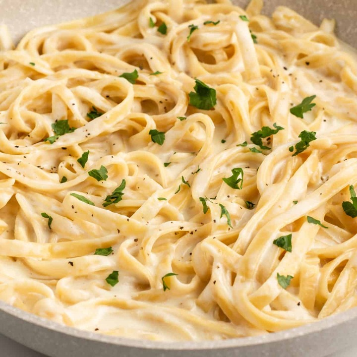

Pasta with Alfredo Sauce

Ingredients:
- 8 ounce pasta(linguine in the picture)
- 4 tablespoon butter(unsalted)
- 2 cloves garlic(minced)
- 1&1/2 cups milk
- 1 cup heavy cream
- 1/2 cup Parmesan cheese(shredded)
- 1/4 teaspoon salt
- 1/4 teaspoon pepper
- 2 tablespoon freshly chopped parsley
Instructions:
- Cook the pasta according to the package instructions.
- Melt the butter in a large skillet over medium high heat. Add the garlic and cook for 30 seconds, or until fragrant.
- Pour in the milk and cream. Stir consistently to avoid burning on the bottom of the pan until the mixture comes to a boil.
Turn the heat down to medium, and mix in the parmesan cheese, salt, and pepper. Adjust the seasoning to your own taste.
- Remove the pan from the heat and mix in the cooked pasta until the sauce begins to thicken. Garnish with parsley, and serve.